|
|---|

Variables and Data Types
Subset >>> my_list[1] >>> my_list[-3] Slice >>> my_list[1:3] >>> my_list[1:] >>> my_list[:3] >>> my_list[:] Subset Lists of Lists >>> my_list2[1][0] >>> my_list2[1][:2] |
Select item at index 1 Select 3rd last item Select items at index 1 and 2 Select items after index 0 Select items before index 3 Copy my_list my_list[list][itemOfList] |
|---|
Variable Assignment
>>> x=5 >>> x 5 |
|---|
>>> x+2 7 >>> x-2 3 >>> x*2 10 >>> x**2 25 >>> x%2
|
Sum of two variables Subtraction of two variables Multiplication of two variables Exponentiation of a variable Remainder of a variable Division of a variable |
|---|
List Operations
>>> my_list + my_list ['my', 'list', 'is', 'nice', 'my', 'list', 'is', 'nice'] >>> my_list * 2 ['my', 'list', 'is', 'nice', 'my', 'list', 'is', 'nice'] >>> my_list2 > 4 True |
|---|
Types and Type Conversion
List Methods
str() int() float() bool() |
'5', '3.45', 'True' 5, 3, 1 5.0, 1.0 True, True, True |
Variables to strings Variables to integers Variables to floats Variables to booleans |
|---|
>>> my_list.index(a) >>> my_list.count(a) >>> my_list.append('!') >>> my_list.remove('!') >>> del(my_list[0:1]) >>> my_list.reverse() >>> my_list.extend('!') >>> my_list.pop(-1) >>> my_list.insert(0,'!') >>> my_list.sort() |
Get the index of an item Count an item Append an item at a time Remove an item Remove an item Reverse the list Append an item Remove an item Insert an item Sort the list |
|---|
>>> help(str) |
|---|
Strings
>>> my_string = 'thisStringIsAwesome' >>> my_string 'thisStringIsAwesome' |
|---|
String Operations
Index starts at 0
>>> my_string[3] >>> my_string[4:9] |
|---|
String Operations
String Methods
>>> my_string * 2 'thisStringIsAwesomethisStringIsAwesome' >>> my_string + 'Innit' 'thisStringIsAwesomeInnit' >>> 'm' in my_string True |
|---|
>>> my_string.upper() >>> my_string.lower() >>> my_string.count('w') >>> my_string.replace('e', 'i') >>> my_string.strip() |
String to uppercase String to lowercase Count String elements Replace String elements Strip whitespaces |
|---|
Import libraries >>> import numpy >>> import numpy as np Selective import>>> from math import pi LibrariesScientific computing Data analysis 2D plotting |
|---|
Also see Lists
>>> my_list = [1, 2, 3, 4] >>> my_array = np.array(my_list) >>> my_2darray = np.array([[1,2,3],[4,5,6]]) |
|---|
Selecting Numpy Array Elements Index starts at 0
Subset>>> my_array[1] 2 Slice>>> my_array[0:2] array([1, 2]) Subset 2D Numpy arrays >>> my_2darray[:,0] array([1, 4]) |
Select item at index 1 Select items at index 0 and 1 my_2darray[rows, columns] |
|---|
Numpy Array Operations
>>> my_array > 3 array([False, False, False, True], dtype=bool) >>> my_array * 2 array([2, 4, 6, 8]) >>> my_array + np.array([5, 6, 7, 8]) array([6, 8, 10, 12]) |
|---|
Numpy Array Functions
>>> my_array.shape >>> np.append(other_array) >>> np.insert(my_array, 1, 5) >>> np.delete(my_array,[1]) >>> np.mean(my_array) >>> np.median(my_array) >>> my_array.corrcoef() >>> np.std(my_array) |
Get the dimensions of the array Append items to an array Insert items in an array Delete items in an array Mean of the array Median of the array Correlation coefficient Standard deviation |
|---|
Working with Different Programming Languages
Kernels provide computation and communication with front-end interfaces like the notebooks. There are three main kernels:
Notebook widgets provide the ability to visualize and control changes in your data, often as a control like a slider, textbox, etc.
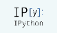
You can use them to build interactive GUIs for your notebooks or to synchronize stateful and stateless information between Python and JavaScript.
IRkernel IJulia
Saving/Loading Notebooks
Interrupt kernel
Restart kernel
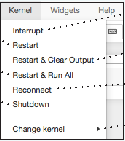 |
|---|
Download serialized state of all widget models in use
Create new notebook
Interrupt kernel & clear all output
Save notebook with interactive widgets
Restart kernel & run all cells
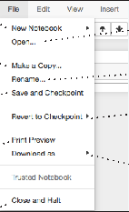 |
|---|
Open an existing notebookMake a copy of the current notebook
Connect back to a remote notebook
Restart kernel & run all cells
Embed current widgets
Rename notebook
Run other installed kernels
Revert notebook to a previous checkpoint
Save current notebook and record checkpoint
Command Mode:
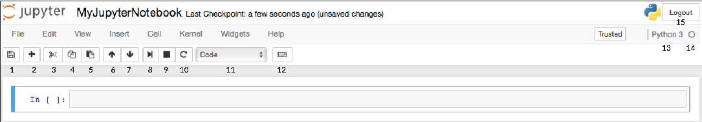 1 2 3 4 5 6 7 8 9 10 11 12 13 14 15 |
|---|
Download notebook as
Preview of the printed notebook
- IPython notebook
- Python
- HTML
- Markdown
- reST
- LaTeX
Close notebook & stop running any scripts
Writing Code And Text
Code and text are encapsulated by 3 basic cell types: markdown cells, code cells, and raw NBConvert cells.
Edit Mode:
9. Interrupt kernel
10. Restart kernel
11. Display characteristics
12. Open command palette
13. Current kernel
14. Kernel status
15. Log out from notebook server
1. Save and checkpoint
2. Insert cell below
3. Cut cell
4. Copy cell(s)
5. Paste cell(s) below
6. Move cell up
7. Move cell down
8. Run current cell
Edit Cells
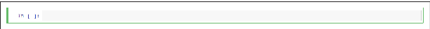 |
|---|
Cut currently selected cells to clipboard
Copy cells from clipboard to current cursor position
Executing Cells Run selected cell(s) Run current cells down
Paste cells from clipboard above current cell
Paste cells from clipboard below
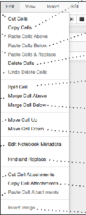 |
|---|
and create a new one below
current cellPaste cells from clipboard on top of current cel
Asking For Help
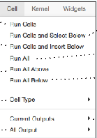 |
|---|
Run current cells down and create a new one above Run all cells
Delete current cells
Walk through a UI tour
Split up a cell from current cursor position
Revert “Delete Cells” invocation
List of built-in keyboard shortcutsEdit the built-in keyboard shortcuts
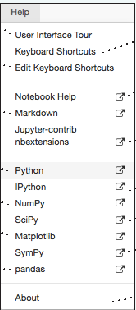 |
|---|
Run all cells below the current cell
Run all cells above the current cell
Merge current cell with the one above
Merge current cell with the one below
Change the cell type of current cell
Notebook help topics
toggle, toggle scrolling and clear
Description of markdown available in notebook
Move current cell up Move current cell
current outputstoggle, toggle scrolling and clear all output
Information on unofficial Jupyter Notebook extensions
down
Adjust metadata underlying the current notebook
Find and replace in selected cells
Python help topics
IPython help topics NumPy help topics
View Cells
Remove cell attachments
Copy attachments of current cell
SciPy help topics
Toggle display of Jupyter logo and filename
Toggle display of toolbar
Matplotlib help topics
Paste attachments of current cell
Insert image in selected cells
SymPy help topics
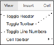 |
|---|
Toggle display of cell action icons:
Pandas help topics
About Jupyter Notebook
Insert Cells
- None
- Edit metadata
- Raw cell format
- Slideshow
- Attachments
- Tags
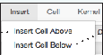 |
|---|
Toggle line numbers in cells
Add new cell below the current one
Add new cell above the current one
DataCamp
Subsetting, Slicing, Indexing
Also see Lists
|
Array dimensions Length of array Number of array dimensions Number of array elements Data type of array elements Name of data type Convert an array to a different type |
|---|
Subsetting
Slicing
[ 4., 5., 6.]]])
array([[ 4. ,5. , 6. , 4. ], [ 1.5, 2. , 3. , 1.5], [ 4. , 5. , 6. , 4. ], [ 1.5, 2. , 3. , 1.5]])
|
Select the element at the 2nd index Select the element at row 0 column 2 (equivalent to b[1][2]) Select items at index 0 and 1 Select items at rows 0 and 1 in column 1 Select all items at row 0 (equivalent to b[0:1, :]) Same as [1,:,:] Reversed array a Select elements from a less than 2 Select elements (1,0),(0,1),(1,2) and (0,0) Select a subset of the matrix’s rows and columns |
|---|
NumPy
2 The NumPy library is the core library for scientific computing in Python. It provides a high-performance multidimensional array object, and tools for working with these arrays. >>> import numpy as np Use the following import convention:
NumPy Arrays
|
|---|
Asking For Help
>>> np.info(np.ndarray.dtype) |
|---|
Array Mathematics
Arithmetic Operations
>>> g = a - b array([[-0.5, 0. , 0. ], [-3. , -3. , -3. ]]) >>> np.subtract(a,b) >>> b + a array([[ 2.5, 4. , 6. ], [ 5. , 7. , 9. ]]) >>> np.add(b,a) >>> a / b array([[ 0.66666667, 1. , 1. ], [ 0.25 , 0.4 , 0.5 ]]) >>> np.divide(a,b) >>> a * b array([[ 1.5, 4. , 9. ], [ 4. , 10. , 18. ]]) >>> np.multiply(a,b) >>> np.exp(b) >>> np.sqrt(b) >>> np.sin(a) >>> np.cos(b) >>> np.log(a) >>> e.dot(f) array([[ 7., 7.], [ 7., 7.]]) |
Subtraction Subtraction Addition Addition Division Division Multiplication Multiplication Exponentiation Square root Print sines of an array Element-wise cosine Element-wise natural logarithm Dot product |
|---|
Creating Arrays
|
|---|
Transposing Array >>> i = np.transpose(b) >>> i.T Changing Array Shape >>> b.ravel()
Combining Arrays >>> np.concatenate((a,d),axis=0) array([ 1, 2, 3, 10, 15, 20]) >>> np.vstack((a,b)) array([[ 1. , 2. , 3. ], [ 1.5, 2. , 3. ], [ 4. , 5. , 6. ]]) >>> np.r_[e,f] >>> np.hstack((e,f)) array([[ 7., 7., 1., 0.], [ 7., 7., 0., 1.]]) >>> np.column_stack((a,d)) array([[ 1, 10],
>>> np.c_[a,d] Splitting Arrays >>> np.hsplit(a,3) [array([1]),array([2]),array([3])] >>> np.vsplit(c,2) [array([[[ 1.5, 2. , 1. ], [ 4. , 5. , 6. ]]]), array([[[ 3., 2., 3.], [ 4., 5., 6.]]])] |
Permute array dimensions Permute array dimensions Flatten the array Reshape, but don’t change data Return a new array with shape (2,6) Append items to an array Insert items in an array Delete items from an array Concatenate arrays Stack arrays vertically (row-wise) Stack arrays vertically (row-wise) Stack arrays horizontally (column-wise) Create stacked column-wise arrays Create stacked column-wise arrays Split the array horizontally at the 3rd index Split the array vertically at the 2nd index |
|---|
Initial Placeholders
>>> np.zeros((3,4)) >>> np.ones((2,3,4),dtype=np.int16)
|
Create an array of zeros Create an array of ones Create an array of evenly spaced values (step value) Create an array of evenly spaced values (number of samples) Create a constant array Create a 2X2 identity matrix Create an array with random values Create an empty array |
|---|
>>> a == b array([[False, True, True], [False, False, False]], dtype=bool) >>> a < 2 array([True, False, False], dtype=bool) >>> np.array_equal(a, b) |
Element-wise comparison Element-wise comparison Array-wise comparison |
|---|
Aggregate Functions
Saving & Loading On Disk
|
Array-wise sum Array-wise minimum value Maximum value of an array row Cumulative sum of the elements Mean Median Correlation coefficient Standard deviation |
|---|
>>> np.save('my_array', a) >>> np.savez('array.npz', a, b) >>> np.load('my_array.npy') |
|---|
Saving & Loading Text Files
>>> np.loadtxt("myfile.txt") >>> np.genfromtxt("my_file.csv", delimiter=',') >>> np.savetxt("myarray.txt", a, delimiter=" ") |
|---|
>>> h = a.view() >>> np.copy(a) >>> h = a.copy() |
Create a view of the array with the same data Create a copy of the array Create a deep copy of the array |
|---|
>>> np.int64 >>> np.float32 >>> np.complex >>> np.bool >>> np.object >>> np.string_ >>> np.unicode_ |
Signed 64-bit integer types Standard double-precision floating point Complex numbers represented by 128 floats Boolean type storing TRUE and FALSE values Python object type Fixed-length string type Fixed-length unicode type |
|---|
>>> a.sort() >>> c.sort(axis=0) |
Sort an array Sort the elements of an array's axis |
|---|
Also see NumPy
You’ll use the linalg and sparse modules. Note that scipy.linalgcontains and expands on numpy.linalg.
>>> from scipy import linalg, sparse |
|---|
Learn More Python for Data Science Interactively at www.datacamp.com
Creating Matrices
Addition >>> np.add(A,D) Subtraction >>> np.subtract(A,D) Division >>> np.divide(A,D) Multiplication >>> np.multiply(D,A) >>> np.dot(A,D) >>> np.vdot(A,D) >>> np.inner(A,D) >>> np.outer(A,D) >>> np.tensordot(A,D) >>> np.kron(A,D) Exponential Functions >>> linalg.expm(A) >>> linalg.expm2(A) >>> linalg.expm3(D) Logarithm Function >>> linalg.logm(A) Trigonometric Tunctions >>> linalg.sinm(D) >>> linalg.cosm(D) >>> linalg.tanm(A) Hyperbolic Trigonometric Functions>>> linalg.sinhm(D) >>> linalg.coshm(D) >>> linalg.tanhm(A) Matrix Sign Function >>> np.sigm(A) Matrix Square Root >>> linalg.sqrtm(A) Arbitrary Functions >>> linalg.funm(A, lambda x: x*x) |
Addition Subtraction Division Multiplication Dot product Vector dot product Inner product Outer product Tensor dot product Kronecker product Matrix exponential Matrix exponential (Taylor Series) Matrix exponential(eigenvalue decomposition) Matrix logarithm Matrix sine Matrix cosine Matrix tangent Hypberbolic matrix sine Hyperbolic matrix cosine Hyperbolic matrix tangent Matrix sign function Matrix square root Evaluate matrix function |
|---|
|
|---|
The SciPy library is one of the core packages for scientific computing that provides mathematical algorithms and convenience functions built on the NumPy extension of Python.
Basic Matrix Routines
Inverse>>> A.I Inverse >>> linalg.inv(A) Inverse >>> A.T Tranpose matrix >>> A.H Conjugate transposition >>> np.trace(A) Trace Norm >>> linalg.norm(A) Frobenius norm >>> linalg.norm(A,1) L1 norm (max column sum) >>> linalg.norm(A,np.inf) L inf norm (max row sum) Rank>>> np.linalg.matrix_rank(C) Matrix rank Determinant>>> linalg.det(A) Determinant Solving linear problems>>> linalg.solve(A,b) Solver for dense matrices >>> E = np.mat(a).T Solver for dense matrices >>> linalg.lstsq(D,E) Least-squares solution to linear matrix equation Generalized inverse>>> linalg.pinv(C) Compute the pseudo-inverse of a matrix (least-squares solver) >>> linalg.pinv2(C) Compute the pseudo-inverse of a matrix (SVD) |
|---|
>>> import numpy as np
|
|---|
Index Tricks
>>> np.mgrid[0:5,0:5] >>> np.ogrid[0:2,0:2] >>> np.r_[[3,[0]*5,-1:1:10j] >>> np.c_[b,c] |
Create a dense meshgrid Create an open meshgrid Stack arrays vertically (row-wise) Create stacked column-wise arrays |
|---|
>>> np.transpose(b) >>> b.flatten() >>> np.hstack((b,c)) >>> np.vstack((a,b)) >>> np.hsplit(c,2) >>> np.vpslit(d,2) |
Permute array dimensions Flatten the array Stack arrays horizontally (column-wise) Stack arrays vertically (row-wise) Split the array horizontally at the 2nd index Split the array vertically at the 2nd index |
|---|
Polynomials
>>> from numpy import poly1d >>> p = poly1d([3,4,5]) |
Create a polynomial object |
|---|
Vectorizing Functions
|
Create a 2X2 identity matrix Create a 2x2 identity matrix Compressed Sparse Row matrix Compressed Sparse Column matrix Dictionary Of Keys matrix Sparse matrix to full matrix Identify sparse matrix |
|---|
>>> def myfunc(a): if a < 0: return a*2 else: return a/2 >>> np.vectorize(myfunc) |
Vectorize functions |
|---|
Eigenvalues and Eigenvectors >>> la, v = linalg.eig(A) >>> l1, l2 = la
Singular Value Decomposition >>> U,s,Vh = linalg.svd(B) >>> M,N = B.shape >>> Sig = linalg.diagsvd(s,M,N) LU Decomposition>>> P,L,U = linalg.lu(C) |
Solve ordinary or generalized eigenvalue problem for square matrix Unpack eigenvalues First eigenvector Second eigenvector Unpack eigenvalues Singular Value Decomposition (SVD) Construct sigma matrix in SVD LU Decomposition |
|---|
Type Handling
>>> np.real(c) >>> np.imag(c) >>> np.real_if_close(c,tol=1000) >>> np.cast['f'](np.pi) |
Return the real part of the array elements Return the imaginary part of the array elements Return a real array if complex parts close to 0 Cast object to a data type |
|---|
Inverse>>> sparse.linalg.inv(I) Norm >>> sparse.linalg.norm(I) Solving linear problems >>> sparse.linalg.spsolve(H,I) |
Inverse Norm Solver for sparse matrices |
|---|
>>> np.angle(b,deg=True) >>> g = np.linspace(0,np.pi,num=5) >>> g [3:] += np.pi >>> np.unwrap(g) >>> np.logspace(0,10,3) >>> np.select([c<4],[c*2]) >>> misc.factorial(a) >>> misc.comb(10,3,exact=True) >>> misc.central_diff_weights(3) >>> misc.derivative(myfunc,1.0) |
Return the angle of the complex argument Create an array of evenly spaced values (number of samples) Unwrap Create an array of evenly spaced values (log scale) Return values from a list of arrays depending on conditions Factorial Combine N things taken at k time Weights for Np-point central derivative Find the n-th derivative of a function at a point |
|---|
>>> la, v = sparse.linalg.eigs(F,1) >>> sparse.linalg.svds(H, 2) |
Eigenvalues and eigenvectors SVD |
|---|
>>> sparse.linalg.expm(I) |
Sparse matrix exponential |
|---|
Asking For Help
>>> help(scipy.linalg.diagsvd) >>> np.info(np.matrix) |
|---|
Learn Python for Data ScienceInteractively
>>> help(pd.Series.loc) Asking For Help |
|---|
>>> s.drop(['a', 'c']) >>> df.drop('Country', axis=1) |
Drop values from rows (axis=0) Drop values from columns(axis=1) |
|---|
Also see NumPy Arrays
Getting
>>> s['b'] -5 >>> df[1:] Country Capital Population
|
Get one element Get subset of a DataFrame |
|---|
>>> df.sort_index() >>> df.sort_values(by='Country') >>> df.rank() |
Sort by labels along an axis Sort by the values along an axis Assign ranks to entries |
|---|
The Pandas library is built on NumPy and provides easy-to-use data structures and data analysis tools for the Python programming language.
Retrieving Series/DataFrame Information
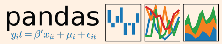
Selecting, Boolean Indexing & Setting Basic Information
Use the following import convention: Pandas Data Structures
By Position>>> df.iloc([0],[0]) 'Belgium' >>> df.iat([0],[0]) 'Belgium' By Label >>> df.loc([0], ['Country']) 'Belgium' >>> df.at([0], ['Country']) 'Belgium' By Label/Position >>> df.ix[2]Country Brazil Capital Brasília Population 207847528 >>> df.ix[:,'Capital']
>>> df.ix[1,'Capital'] 'New Delhi' Boolean Indexing >>> s[~(s > 1)] >>> s[(s < -1) | (s > 2)] >>> df[df['Population']>1200000000] Setting>>> s['a'] = 6 |
Select single value by row & column Select single value by row & column labels Select single row of subset of rows Select a single column of subset of columns Select rows and columns Series s where value is not >1 s where value is <-1 or >2 Use filter to adjust DataFrame Set index a of Series s to 6 |
|---|
>>> df.shape >>> df.index >>> df.columns >>> df.info() >>> df.count() |
(rows,columns) Describe index Describe DataFrame columns Info on DataFrame Number of non-NA values |
|---|
>>> import pandas as pd
Series
a |
3 |
|---|---|
b |
-5 |
c |
7 |
d |
4 |
A one-dimensional labeled array capable of holding any data type
>>> df.sum() >>> df.cumsum() >>> df.min()/df.max() >>> df.idxmin()/df.idxmax() >>> df.describe() >>> df.mean() >>> df.median() |
Sum of values Cummulative sum of values Minimum/maximum values Minimum/Maximum index value Summary statistics Mean of values Median of values |
|---|
Index
>>> s = pd.Series([3, -5, 7, 4], index=['a', 'b', 'c', 'd'])
Applying Functions
DataFrame
>>> f = lambda x: x*2 >>> df.apply(f) >>> df.applymap(f) |
Apply function Apply function element-wise |
|---|
Columns
A two-dimensional labeled data structure with columns of potentially different types
Country |
Capital |
Population |
|---|
Belgium |
Brussels |
11190846 |
|---|---|---|
India |
New Delhi |
1303171035 |
Brazil |
Brasília |
207847528 |
0 |
|---|
1 |
2 |
Data Alignment
Index
Internal Data Alignment
NA values are introduced in the indices that don’t overlap:
>>> s3 = pd.Series([7, -2, 3], index=['a', 'c', 'd']) >>> s + s3
|
|---|
>>> data = {'Country': ['Belgium', 'India', 'Brazil'], 'Capital': ['Brussels', 'New Delhi', 'Brasília'], 'Population': [11190846, 1303171035, 207847528]}
>>> df = pd.DataFrame(data, columns=['Country', 'Capital', 'Population'])
Arithmetic Operations with Fill Methods
You can also do the internal data alignment yourself with the help of the fill methods:
Read and Write to SQL Query or Database Table
>>> pd.read_csv('file.csv', header=None, nrows=5) >>> df.to_csv('myDataFrame.csv') |
|---|
>>> from sqlalchemy import create_engine >>> engine = create_engine('sqlite:///:memory:') >>> pd.read_sql("SELECT * FROM my_table;", engine) >>> pd.read_sql_table('my_table', engine) >>> pd.read_sql_query("SELECT * FROM my_table;", engine) |
|---|
>>> s.add(s3, fill_value=0)
>>> s.sub(s3, fill_value=2) >>> s.div(s3, fill_value=4) >>> s.mul(s3, fill_value=3) |
|---|
Read and Write to Excel
>>> pd.read_excel('file.xlsx') >>> pd.to_excel('dir/myDataFrame.xlsx', sheet_name='Sheet1') Read multiple sheets from the same file >>> xlsx = pd.ExcelFile('file.xls') >>> df = pd.read_excel(xlsx, 'Sheet1') |
|---|
read_sql()is a convenience wrapper around read_sql_table() and read_sql_query()
DataCamp
>>> pd.to_sql('myDf', engine) |
|---|
Create Your Model
Evaluate Your Model’s Performance
Classification Metrics
Supervised Learning Estimators
Accuracy Score >>> knn.score(X_test, y_test) >>> from sklearn.metrics import accuracy_score >>> accuracy_score(y_test, y_pred) Classification Report >>> from sklearn.metrics import classification_report >>> print(classification_report(y_test, y_pred)) Confusion Matrix >>> from sklearn.metrics import confusion_matrix >>> print(confusion_matrix(y_test, y_pred)) |
Estimator score method Metric scoring functions Precision, recall, f1-score and support |
|---|
Linear Regression >>> from sklearn.linear_model import LinearRegression >>> lr = LinearRegression(normalize=True) Support Vector Machines (SVM) >>> from sklearn.svm import SVC >>> svc = SVC(kernel='linear') Naive Bayes >>> from sklearn.naive_bayes import GaussianNB >>> gnb = GaussianNB() KNN >>> from sklearn import neighbors >>> knn = neighbors.KNeighborsClassifier(n_neighbors=5) |
|---|
Learn Python for data science Interactively at www.DataCamp.com
Scikit-learn
Scikit-learn is an open source Python library that implements a range of machine learning, preprocessing, cross-validation and visualization algorithms using a unified interface.
Regression Metrics
A Basic Example
Mean Absolute Error>>> from sklearn.metrics import mean_absolute_error >>> y_true = [3, -0.5, 2] >>> mean_absolute_error(y_true, y_pred) Mean Squared Error >>> from sklearn.metrics import mean_squared_error >>> mean_squared_error(y_test, y_pred) R² Score >>> from sklearn.metrics import r2_score >>> r2_score(y_true, y_pred) |
|---|
>>> from sklearn import neighbors, datasets, preprocessing >>> from sklearn.model_selection import train_test_split >>> from sklearn.metrics import accuracy_score >>> iris = datasets.load_iris() >>> X, y = iris.data[:, :2], iris.target >>> X_train, X_test, y_train, y_test = train_test_split(X, y, random_state=33) >>> scaler = preprocessing.StandardScaler().fit(X_train) >>> X_train = scaler.transform(X_train) >>> X_test = scaler.transform(X_test) >>> knn = neighbors.KNeighborsClassifier(n_neighbors=5) >>> knn.fit(X_train, y_train) >>> y_pred = knn.predict(X_test) >>> accuracy_score(y_test, y_pred) |
|---|
Unsupervised Learning Estimators
Principal Component Analysis (PCA) >>> from sklearn.decomposition import PCA >>> pca = PCA(n_components=0.95) K Means >>> from sklearn.cluster import KMeans >>> k_means = KMeans(n_clusters=3, random_state=0) |
|---|
Clustering Metrics
Model Fitting
Adjusted Rand Index>>> from sklearn.metrics import adjusted_rand_score >>> adjusted_rand_score(y_true, y_pred) Homogeneity >>> from sklearn.metrics import homogeneity_score >>> homogeneity_score(y_true, y_pred) V-measure >>> from sklearn.metrics import v_measure_score >>> metrics.v_measure_score(y_true, y_pred) |
|---|
Supervised learning >>> lr.fit(X, y) >>> knn.fit(X_train, y_train) >>> svc.fit(X_train, y_train) Unsupervised Learning >>> k_means.fit(X_train) >>> pca_model = pca.fit_transform(X_train) |
Fit the model to the data Fit the model to the data Fit to data, then transform it |
|---|
Loading The Data Also seeNumPy&Pandas
Your data needs to be numeric and stored as NumPy arrays or SciPy sparse matrices. Other types that are convertible to numeric arrays, such as Pandas DataFrame, are also acceptable.
>>> import numpy as np >>> X = np.random.random((10,5)) >>> y = np.array(['M','M','F','F','M','F','M','M','F','F','F']) >>> X[X < 0.7] = 0 |
|---|
Prediction
Cross-Validation
>>> from sklearn.cross_validation import cross_val_score >>> print(cross_val_score(knn, X_train, y_train, cv=4)) >>> print(cross_val_score(lr, X, y, cv=2)) |
|---|
Supervised Estimators >>> y_pred = svc.predict(np.random.random((2,5))) >>> y_pred = lr.predict(X_test) >>> y_pred = knn.predict_proba(X_test) Unsupervised Estimators>>> y_pred = k_means.predict(X_test) |
Predict labels Predict labels Estimate probability of a label Predict labels in clustering algos |
|---|
>>> from sklearn.model_selection import train_test_split >>> X_train, X_test, y_train, y_test = train_test_split(X, y, random_state=0) |
|---|
Tune Your Model
Grid Search
>>> from sklearn.grid_search import GridSearchCV >>> params = {"n_neighbors": np.arange(1,3), "metric": ["euclidean", "cityblock"]} >>> grid = GridSearchCV(estimator=knn, param_grid=params) >>> grid.fit(X_train, y_train) >>> print(grid.best_score_) >>> print(grid.best_estimator_.n_neighbors) |
|---|
>>> from sklearn.preprocessing import StandardScaler >>> scaler = StandardScaler().fit(X_train) >>> standardized_X = scaler.transform(X_train) >>> standardized_X_test = scaler.transform(X_test) |
|---|
>>> from sklearn.preprocessing import LabelEncoder >>> enc = LabelEncoder() >>> y = enc.fit_transform(y) |
|---|
Randomized Parameter Optimization
>>> from sklearn.grid_search import RandomizedSearchCV >>> params = {"n_neighbors": range(1,5), "weights": ["uniform", "distance"]} >>> rsearch = RandomizedSearchCV(estimator=knn, param_distributions=params, cv=4, n_iter=8, random_state=5) >>> rsearch.fit(X_train, y_train) >>> print(rsearch.best_score_) |
|---|
>>> from sklearn.preprocessing import Normalizer >>> scaler = Normalizer().fit(X_train) >>> normalized_X = scaler.transform(X_train) >>> normalized_X_test = scaler.transform(X_test) |
|---|
>>> from sklearn.preprocessing import Imputer >>> imp = Imputer(missing_values=0, strategy='mean', axis=0) >>> imp.fit_transform(X_train) |
|---|
>>> from sklearn.preprocessing import PolynomialFeatures >>> poly = PolynomialFeatures(5) >>> poly.fit_transform(X) |
|---|
>>> from sklearn.preprocessing import Binarizer >>> binarizer = Binarizer(threshold=0.0).fit(X) >>> binary_X = binarizer.transform(X) |
|---|
Plot Anatomy & Workflow
Plot Anatomy Workflow
The basic steps to creating plots with matplotlib are:
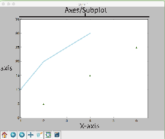
Axes/Subplot
1Prepare data 2Create plot 3Plot 4 Customize plot 5Save plot 6Show plot
Learn Python Interactively at www.DataCamp.com
>>> import matplotlib.pyplot as plt
[5,15,25], color='darkgreen', marker='^') >>> ax.set_xlim(1, 6.5) >>> plt.savefig('foo.png') >>> plt.show() Step 3, 4 Step 2 Step 1 Step 3 Step 6 |
|---|
Y-axis
Matplotlib is a Python 2D plotting library which produces publication-quality figures in a variety of hardcopy formats and interactive environments across platforms.
X-axis
Prepare The Data Also seeLists&NumPy
1D Data
2D Data or Images
>>> import numpy as np
|
|---|
Mathtext
Colors, Color Bars & Color Maps
>>> plt.plot(x, x, x, x**2, x, x**3) >>> ax.plot(x, y, alpha = 0.4) >>> ax.plot(x, y, c='k') >>> fig.colorbar(im, orientation='horizontal') >>> im = ax.imshow(img, cmap='seismic') |
|---|
>>> plt.title(r'$sigma_i=15$', fontsize=20) |
|---|
Limits, Legends & Layouts
Limits & Autoscaling >>> ax.margins(x=0.0,y=0.1) >>> ax.axis('equal') >>> ax.set(xlim=[0,10.5],ylim=[-1.5,1.5]) >>> ax.set_xlim(0,10.5) Legends>>> ax.set(title='An Example Axes', ylabel='Y-Axis', xlabel='X-Axis') >>> ax.legend(loc='best') Ticks>>> ax.xaxis.set(ticks=range(1,5), ticklabels=[3,100,-12,"foo"]) >>> ax.tick_params(axis='y', direction='inout', length=10) Subplot Spacing>>> fig3.subplots_adjust(wspace=0.5, hspace=0.3, left=0.125, right=0.9, top=0.9, bottom=0.1) >>> fig.tight_layout() Axis Spines >>> ax1.spines['top'].set_visible(False) >>> ax1.spines['bottom'].set_position(('outward',10)) |
Add padding to a plot Set the aspect ratio of the plot to 1 Set limits for x-and y-axis Set limits for x-axis Set a title and x-and y-axis labels No overlapping plot elements Manually set x-ticks Make y-ticks longer and go in and out Adjust the spacing between subplots Fit subplot(s) in to the figure area Make the top axis line for a plot invisible Move the bottom axis line outward |
|---|
>>> data = 2 * np.random.random((10, 10)) >>> data2 = 3 * np.random.random((10, 10)) >>> Y, X = np.mgrid[-3:3:100j, -3:3:100j]
|
|---|
Markers
>>> fig, ax = plt.subplots() >>> ax.scatter(x,y,marker=".") >>> ax.plot(x,y,marker="o") |
|---|
Linestyles
Create Plot2
>>> plt.plot(x,y,linewidth=4.0) >>> plt.plot(x,y,ls='solid') >>> plt.plot(x,y,ls='--') >>> plt.plot(x,y,'--',x**2,y**2,'-.') >>> plt.setp(lines,color='r',linewidth=4.0) |
|---|
>>> import matplotlib.pyplot as plt |
|---|
Figure
>>> fig = plt.figure() >>> fig2 = plt.figure(figsize=plt.figaspect(2.0)) |
|---|
Text & Annotations
>>> ax.text(1, -2.1, 'Example Graph', style='italic') >>> ax.annotate("Sine", xy=(8, 0), xycoords='data', xytext=(10.5, 0), textcoords='data', arrowprops=dict(arrowstyle="->", connectionstyle="arc3"),) |
|---|
Axes
All plotting is done with respect to an Axes. In most cases, a subplot will fit your needs. A subplot is an axes on a grid system.
>>> fig.add_axes() >>> ax1 = fig.add_subplot(221) # row-col-num >>> ax3 = fig.add_subplot(212)
|
|---|
5
Save figures>>> plt.savefig('foo.png') Save transparent figures>>> plt.savefig('foo.png', transparent=True) |
|---|
1D Data
>>> fig, ax = plt.subplots() >>> im = ax.imshow(img, cmap='gist_earth', interpolation='nearest', vmin=-2, vmax=2) |
Colormapped or RGB arrays |
|---|
2D Data or Images
Vector Fields
>>> fig, ax = plt.subplots() >>> lines = ax.plot(x,y) >>> ax.scatter(x,y)
|
Draw points with lines or markers connecting them Draw unconnected points, scaled or colored Plot vertical rectangles (constant width) Plot horiontal rectangles (constant height) Draw a horizontal line across axes Draw a vertical line across axes Draw filled polygons Fill between y-values and 0 |
|---|
|
Add an arrow to the axes Plot a 2D field of arrows Plot a 2D field of arrows |
|---|
6
>>> ax1.hist(y) >>> ax3.boxplot(y) >>> ax3.violinplot(z) |
Plot a histogram Make a box and whisker plot Make a violin plot |
|---|
>>> plt.show() |
|---|
>>> plt.cla() >>> plt.clf() >>> plt.close() |
Clear an axis Clear the entire figure Close a window |
|---|
>>> axes2[0].pcolor(data2) Pseudocolor plot of 2D array >>> axes2[0].pcolormesh(data) Pseudocolor plot of 2D array >>> CS = plt.contour(Y,X,U) Plot contours >>> axes2[2].contourf(data1) Plot filled contours >>> axes2[2]= ax.clabel(CS) Label a contour plot |
|---|
Learn Python for Data ScienceInteractively
Matplotlib 2.0.0 - Updated on: 02/2017
Axis Grids
>>> g = sns.FacetGrid(titanic, col="survived", row="sex") >>> g = g.map(plt.hist,"age") >>> sns.factorplot(x="pclass", y="survived", hue="sex", data=titanic) >>> sns.lmplot(x="sepal_width", y="sepal_length", hue="species", data=iris) |
Subplot grid for plotting conditional relationships Draw a categorical plot onto a Facetgrid Plot data and regression model fits across a FacetGrid |
|---|
>>> sns.jointplot("sepal_length", "sepal_width", data=iris, kind='kde') |
Subplot grid for plotting pairwise relationships Plot pairwise bivariate distributions Grid for bivariate plot with marginal univariate plots Plot bivariate distribution |
|---|
Learn Data Science Interactively at www.DataCamp.com
The Python visualization library Seaborn is based on matplotlib and provides a high-level interface for drawing attractive statistical graphics.
Regression PlotsCategorical Plots
Make use of the following aliases to import the libraries:
>>> sns.regplot(x="sepal_width", y="sepal_length", data=iris, ax=ax) |
Plot data and a linear regression model fit |
|---|
Scatterplot>>> sns.stripplot(x="species", y="petal_length", data=iris) >>> sns.swarmplot(x="species", y="petal_length", data=iris) Bar Chart>>> sns.barplot(x="sex", y="survived", hue="class", data=titanic) Count Plot>>> sns.countplot(x="deck", data=titanic, palette="Greens_d") Point Plot>>> sns.pointplot(x="class", y="survived", hue="sex", data=titanic, palette={"male":"g", "female":"m"}, markers=["^","o"], linestyles=["-","--"]) Boxplot>>> sns.boxplot(x="alive", y="age", hue="adult_male", data=titanic) >>> sns.boxplot(data=iris,orient="h") Violinplot>>> sns.violinplot(x="age", y="sex", hue="survived", data=titanic) |
Scatterplot with one categorical variable Categorical scatterplot with non-overlapping points Show point estimates and confidence intervals with scatterplot glyphs Show count of observations Show point estimates and confidence intervals as rectangular bars Boxplot Boxplot with wide-form data Violin plot |
|---|
>>> import matplotlib.pyplot as plt >>> import seaborn as sns |
|---|
The basic steps to creating plots with Seaborn are:
1. Prepare some data
2. Control figure aesthetics
3. Plot with Seaborn
4. Further customize your plot
>>> plot = sns.distplot(data.y, kde=False, color="b") |
Plot univariate distribution |
|---|
>>> sns.heatmap(uniform_data,vmin=0,vmax=1) |
Heatmap |
|---|
>>> import matplotlib.pyplot as plt >>> import seaborn as sns >>> tips = sns.load_dataset("tips") >>> sns.set_style("whitegrid") >>> g = sns.lmplot(x="tip", y="total_bill", data=tips, aspect=2) >>> g = (g.set_axis_labels("Tip","Total bill(USD)"). set(xlim=(0,10),ylim=(0,100))) >>> plt.title("title") >>> plt.show(g) Step 4 Step 2 Step 1 Step 5 Step 3 |
|---|
Further Customizations4
Also see Matplotlib
Axisgrid Objects
>>> g.despine(left=True) >>> g.set_ylabels("Survived") >>> g.set_xticklabels(rotation=45)
|
Remove left spine Set the labels of the y-axis Set the tick labels for x Set the axis labels Set the limit and ticks of the x-and y-axis |
|---|
1
>>> titanic = sns.load_dataset("titanic") >>> iris = sns.load_dataset("iris") |
|---|
Seaborn also offers built-in data sets:
2
Data
Also see Lists, NumPy&Pandas
Plot
>>> import pandas as pd >>> import numpy as np >>> uniform_data = np.random.rand(10, 12) >>> data = pd.DataFrame({'x':np.arange(1,101), 'y':np.random.normal(0,4,100)}) |
|---|
>>> plt.title("A Title") >>> plt.ylabel("Survived") >>> plt.xlabel("Sex") >>> plt.ylim(0,100) >>> plt.xlim(0,10) >>> plt.setp(ax,yticks=[0,5]) >>> plt.tight_layout() |
Add plot title Adjust the label of the y-axis Adjust the label of the x-axis Adjust the limits of the y-axis Adjust the limits of the x-axis Adjust a plot property Adjust subplot params |
|---|
5
Show or Save Plot
Also see Matplotlib
Figure Aesthetics
Also see Matplotlib
>>> plt.show() >>> plt.savefig("foo.png") >>> plt.savefig("foo.png", transparent=True) |
Show the plot Save the plot as a figure Save transparent figure |
|---|
>>> f, ax = plt.subplots(figsize=(5,6)) |
Create a figure and one subplot |
|---|
>>> sns.set_context("talk") >>> sns.set_context("notebook", font_scale=1.5, rc={"lines.linewidth":2.5}) |
Set context to "talk" Set context to "notebook", Scale font elements and override param mapping |
|---|
Seaborn styles
Close & Clear
Also see Matplotlib
>>> sns.set() >>> sns.set_style("whitegrid") >>> sns.set_style("ticks", {"xtick.major.size":8, "ytick.major.size":8}) >>> sns.axes_style("whitegrid") |
(Re)set the seaborn default Set the matplotlib parameters Set the matplotlib parameters Return a dict of params or use with with to temporarily set the style |
|---|
>>> plt.cla() >>> plt.clf() >>> plt.close() |
Clear an axis Clear an entire figure Close a window |
|---|
Color Palette
>>> sns.set_palette("husl",3) Define the color palette >>> sns.color_palette("husl") Use with with to temporarily set palette >>> flatui = ["#9b59b6","#3498db","#95a5a6","#e74c3c","#34495e","#2ecc71"] >>> sns.set_palette(flatui) Set your own color palette |
|---|
Grid Layout
Scatter Markers
Line Glyphs
|
|---|
>>> from bokeh.layouts import gridplot
|
|---|
Learn Bokeh Interactively at www.DataCamp.com, taught by Bryan Van de Ven, core contributor
>>> from bokeh.models.widgets import Panel, Tabs
|
|---|
The Python interactive visualization library Bokeh enables high-performance visual presentation of large datasets in modern web browsers.
Customized Glyphs
Also seeData
Linked Plots
Selection and Non-Selection Glyphs >>> p = figure(tools='box_select') >>> p.circle('mpg', 'cyl', source=cds_df, selection_color='red', nonselection_alpha=0.1) Hover Glyphs >>> from bokeh.models import HoverTool >>> hover = HoverTool(tooltips=None, mode='vline') >>> p3.add_tools(hover) Colormapping >>> from bokeh.models import CategoricalColorMapper >>> color_mapper = CategoricalColorMapper(
factors=['US', 'Asia', 'Europe'], palette=['blue', 'red', 'green']) >>> p3.circle('mpg', 'cyl', source=cds_df, color=dict(field='origin', transform=color_mapper), legend='Origin') 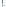 |
|---|
Bokeh’s mid-level general purpose bokeh.plotting interfaceis centered around two main components: data and glyphs.
Linked Axes
|
|---|
+ =
data glyphs plot
1. Prepare some data:
Python lists, NumPy arrays, Pandas DataFrames and other sequences of values
2. Create a new plot
3. Add renderers for your data, with visual customizations
4. Specify where to generate the output
5. Show or save the results
>>> from bokeh.io import output_notebook, show >>> output_notebook() |
|---|
>>> from bokeh.plotting import figure >>> from bokeh.io import output_file, show
>>> p.line(x, y, legend="Temp.", line_width=2) >>> output_file("lines.html") >>> show(p) Step 4 Step 2 Step 1 Step 5 Step 3 |
|---|
HTML
Legend Location
Standalone HTML >>> from bokeh.embed import file_html >>> from bokeh.resources import CDN >>> html = file_html(p, CDN, "my_plot") |
|---|
Inside Plot Area>>> p.legend.location = 'bottom_left' Outside Plot Area>>> from bokeh.models import Legend
location=(0, -30)) >>> p.add_layout(legend, 'right') |
|---|
>>> from bokeh.io import output_file, show >>> output_file('my_bar_chart.html', mode='cdn') |
|---|
Components >>> from bokeh.embed import components >>> script, div = components(p) |
|---|
1
Data Also seeLists,NumPy&Pandas Under the hood, your data is converted to Column Data Sources. You can also do this manually:
Legend Orientation
PNG
>>> p.legend.orientation = "horizontal" >>> p.legend.orientation = "vertical" |
|---|
>>> import numpy as np >>> import pandas as pd >>> df = pd.DataFrame(np.array([[33.9,4,65, 'US'], [32.4,4,66, 'Asia'], [21.4,4,109, 'Europe']]), columns=['mpg','cyl', 'hp', 'origin'], index=['Toyota', 'Fiat', 'Volvo']) |
|---|
>>> from bokeh.io import export_png >>> export_png(p, filename="plot.png") |
|---|
Legend Background & Border
>>> p.legend.border_line_color = "navy" >>> p.legend.background_fill_color = "white" |
|---|
>>> from bokeh.io import export_svgs >>> p.output_backend = "svg" >>> export_svgs(p, filename="plot.svg") |
|---|
Rows & Columns Layout
>>> from bokeh.models import ColumnDataSource >>> cds_df = ColumnDataSource(df) |
|---|
Rows >>> from bokeh.layouts import row >>> layout = row(p1,p2,p3) Columns >>> from bokeh.layouts import columns >>> layout = column(p1,p2,p3) Nesting Rows & Columns>>>layout = row(column(p1,p2), p3) |
|---|
Show or Save Your Plots5
2
Plotting
>>> from bokeh.plotting import figure
|
|---|
>>> show(p1) >>> save(p1) |
>>> show(layout) >>> save(layout) |
|---|